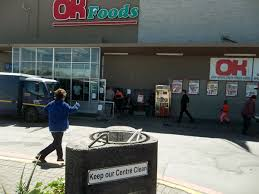

OK FOODS
OK Foods are modern, service-oriented supermarkets situated in neighbourhoods. The layout of each outlet is planned in the most cost-effective way and the store design enforces optimum customer flow and product exposure, enabling franchisees to take advantage of every possible sales and profit opportunity.
TARGET MARKET OK Foods customers fall within the 5-10 LSM bracket. This means shoppers have more disposable income and demand more than just basic services and products.
STORE SIZE Although stores vary in size, the minimum trading area is 800m2 with adequate back-up and storage facilities.
PRODUCT RANGE OK Foods offer their customers a comprehensive variety in product range. At least 14 000 basic lines are carried, which can be supplemented with speciality products based on customer profiles and store locations.
SERVICE DEPARTMENTS In addition to groceries, perishables and non-food products, OK Foods also have a range of in-house service departments that go hand-in-hand with the success of the store format. Service departments are:
- Bakery
- Butchery
- Deli
- Fruit & Vegtables
- Fast Food / Home Meal Replacements
- Wine Section (law-permitting)
Franchisees also have the option of adding on an OK Enjoy liquor store, which has a minimum trading area of 80 m2.